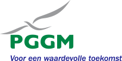
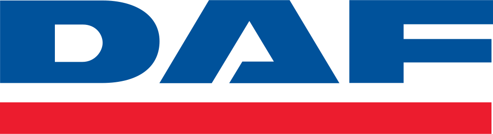

Expertise
-
Belastingdienst - Maart 2018 tot heden

Werkzaamheden
-
Het analyseren van vragen vanuit de business en het laten zien
van de voor- en nadelen van de mogelijke scenario’s
-
Het in beeld brengen van requirements, processen en
informatiebehoeftes
-
Het werken aan vernieuwingen en aanpassingen van applicaties
en systemen
-
Het uitfaseren van bestaande systemen en het invoeren van
nieuwe robuuste oplossingen
-
Het samenwerken met stakeholders, functioneel beheerders en
collega's in de scrumteams
-
Achmea - april 2007 tot februari 2018
- Functioneel ontwerper
- Technisch ontwerper
- Tester
- COBOL ontwikkelaar

Werkzaamheden
-
Adviseren op functioneel als technisch gebied zowel aan de
afdeling als aan klanten.
-
Zelfstandig uitvoeren van impact analyses, vooronderzoeken en
offertes conform de gestelde normen, standaards en
richtlijnen.
-
Verantwoordelijk voor het afgegeven van indicatieve uren,
vooronderzoeken en offertes binnen de gestelde richtlijnen,
normen en standaards.
- Zelfstandig maken van releaseplanningen
-
Verantwoordelijk voor de voortgang van de Bank releases
conform afgesproken tijd, kwaliteit en budget
-
Zorgdragen voor werkverdeling en werkverschaffing van het team
in samenwerking met de Team coördinator
-
Zelfstandig maken van functionele ontwerpen conform de
gestelde normen, standaards en richtlijnen
-
Verantwoordelijk voor de opgeleverde functionaliteiten naar
acceptatie
-
Signaleren van knelpunten en aandragen van eventuele
oplossingen
- Escaleren waar nodig naar de Team coördinator
- Rapporteren aan de Team coördinator
-
Waarborgen van de continuïteit van de systemen (pro-actief
handelen)
-
Analyseren en adviseren met betrekking tot technische aspecten
van de software applicaties
- Zelfstandig oplossen van productieproblemen
-
Signaleren van technische knelpunten en aandragen van
eventuele oplossingen
-
Verantwoordelijk voor de voortgang van de productieproblemen
- Escaleren waar nodig naar de Applicatie coördinator
- Rapporteren aan de Applicatie coördinator
-
Vervanger van de Applicatie coördinator als schakel met andere
externe afdelingen
-
Vertalen vooronderzoeken van de Functioneel ontwerper naar
technische ontwerpen
- Ondersteunen ontwikkelaars tijdens de realisatie
-
Systeemtesten en ketentesten van de aanpassingen volgens de
T-map methode
-
Ondersteuning bieden tijdens de functionele acceptatietesten
(FAT) en de gebruikersacceptatietesten (GAT)
- Ontwikkelen in COBOL, ADS, IDMS
-
Belastingdienst - November 2006 tot Maart 2007
- Functioneel ontwerper
- Technisch ontwerper
Werkzaamheden
-
Functionele en technische ontwerpen genereren en aanpassen in
het Geldverkeersysteem (GVS) van de Belastingdienst
-
Ondersteunen van ontwikkelaars en testers tijdens de
ontwikkel- en testtrajecten
-
Van Lanschot Bankiers - februari 2006 tot oktober 2006
- Functioneel ontwerper
- Technisch ontwerper
- Tester
- COBOL ontwikkelaar

Werkzaamheden
-
Uitvoeren migratie COBOL naar een integraal bankpakket in
Siebel
-
Opstellen en aanpassen functionele en technische ontwerpen van
de interfaces via MQ en XML
- Inrichten van de testomgevingen
- Ontwikkelen in COBOL, CICS, DB2
-
PGGM - november 2005 tot januari 2006
- Functioneel ontwerper
- Technisch ontwerper
- Tester
- COBOL ontwikkelaar

Werkzaamheden
-
Uitvoeren van de implementatie van de nieuwe
Zorgverzekeringswet in het PensioenBetalingenSysteem (PBS)
-
Opstellen en aanpassen functionele en technische specificaties
- Begeleiden van de gebruikersacceptatietesten (GAT)
- Ontwikkelen in Microfocus COBOL, COBOL, TP, IDMSX
-
Van Lanschot Bankiers - maart 2005 tot oktober 2005
- Testcoördinator
- Tester
- COBOL ontwikkelaar
Werkzaamheden
- Integratie banksysteem overgenomen partij
- Inrichten van testomgevingen
-
Opstellen van logische en fysieke testgevallen volgens de
T-map methode
- Maken van testplannen
- Coördineren van de acceptatietest
- Ontwikkelen in COBOL, CICS, DB2
-
Logica - juli 2004 tot februari 2005
- Tester
- COBOL ontwikkelaar

Werkzaamheden
-
Testen dataconversie IDMS naar DB2 van Nationale-Nederlanden,
zowel technisch als logisch
- Inrichten van de testomgevingen
-
Opstellen van logische en fysieke testgevallen volgens de
T-map methode
- Ontwikkelen in COBOL, DB2
-
DAF - oktober 2002 - juli 2003

Werkzaamheden
- Ontwikkelen in MAID, COBOL, IDMS
-
PGGM - Januari 1998 tot September 2002
- Teamleider
- Functioneel ontwerper
- Technisch ontwerper
- Tester
- COBOL ontwikkelaar
Werkzaamheden
-
Opstellen en aanpassen van functionele en technische
specificaties
- Begeleiden van de gebruikersacceptatietesten (GAT)
- Uitvoeren van systeemtesten
- Plannen van de technische ontwerpfase en de bouwfase
- Opstellen van begrotingsspecificaties
- Opstellen van testontwerpen volgens de T-map methode
- Ontwikkelen in Microfocus COBOL, COBOL, TP, IDMSX
-
Koninklijke Luchtmacht - Maart 1995 tot Mei 1996
Werkzaamheden
- Ontwikkelen in COBOL, ADS, IDMS
-
Tennet - Maart 1995 tot Mei 1996

Werkzaamheden
-
Het uitvoeren van het milieubeleidsplan op het gebied van de
Elektriciteitswet
-
Het automatiseren van de milieugegevens voor het jaarlijkse
verplichte milieuverslag
-
IMAG-DLO - oktober 1993 tot februari 1995

Werkzaamheden
-
Leiding geven over diverse projecten op het gebied van de
ammoniakproblematiek
-
Opstellen van nieuwe projectvoorstellen richting de Europese
Unie
- Het schrijven van publicaties